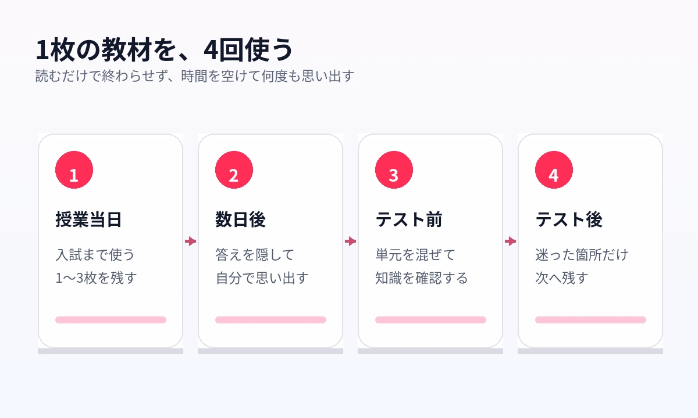

「あの単元、前にやったはずなのに、プリントが見つからない」そんなことはありませんか？
塾へ通うたびに増えていく教材。毎週の宿題。テストの解き直し。講習でもらったプリント。
きれいに分類したつもりでも、数か月前の教材をすぐに取り出すのは簡単ではありません。
せっかく受け取った教材を、必要なときにもう一度使えないことはありませんか？
教材を増やす前に、戻れる仕組みを作る
SAPIX、日能研、四谷大塚など、塾によって教材やテストの仕組みは異なります。
一方で、授業を受けて終わりではなく、家庭で学び直し、テストで確認し、もう一度復習する流れは共通しています。
家庭学習で止まりやすいのは、最後の「もう一度戻る」ところです。
- テストで間違えた
- 説明を読んでも思い出せなかった
- 以前に習った知識が抜けていた
- 元の教材がどこにあるか分からない
本来なら、ここで元の教材へ戻ります。
ところが、ファイルを探しているうちに次の宿題が始まり、復習しないまま次の単元へ進んでしまいます。
新しい問題集を増やす前に、今ある教材へすぐ戻れるかを確認してください。教材が足りないのではありません。使い切れていない教材が、すでに手元にあります。
復習は「もう一度読む」だけでは足りない
教材を開き、説明を読んで、「分かった」と感じる。
それだけでは、本番で答えられるとは限りません。
暗記で大切なのは、答えを見ることではなく、答えを見ない状態で思い出すことです。
学習研究でも、読み返すだけではなく、自分で答えを取り出す練習を行うこと、学習の間隔を空けて繰り返すことが、長期的な定着に有効とされています。
- 答えを隠す
- 自分で思い出す
- 分からなかった部分だけ確認する
- 時間を空けて、もう一度答える
「覚えたはず」を「答えられる」に変える。ここまでできて、復習です。
1枚の教材を、4回使う
塾教材は、授業が終わったら役目を終えるものではありません。
大切なページは、タイミングを変えて何度も使います。
授業当日
その日の教材から、もう一度覚えたいページを1〜3枚だけ選びます。理科や社会のまとめ、図表、年表など、入試まで使いそうなページを残します。
数日後
教材を読み返す前に、重要語句を自分で答えます。すぐに出てこなかったところが、本当の復習ポイントです。
テスト前
テスト範囲のページをまとめ、単元を混ぜて確認します。ページの場所ではなく、知識として答えられるかを確かめます。
テスト後
間違えた、時間がかかった、自信がなかった。この3つだけを、次の復習へ残します。
{kind=link}

復習とは、全範囲を繰り返すことではありません。次の失点になりそうな箇所へ、もう一度戻ることです。
残すべきなのは「入試まで使うページ」
毎週の教材をすべて保存する必要はありません。
残すページを増やしすぎると、デジタル化しても探せなくなります。
中学受験では、次の3種類に絞ると使いやすくなります。
重要事項がまとまったページ
植物のつくり、人体と消化、天体と気象、歴史上の人物、憲法の基本原則など、テスト前や入試前にも戻るページです。
図や表と一緒に覚えるページ
人体の位置関係、制度のつながり、時代の流れ。単語だけを書き直すより、塾教材のレイアウトをそのまま使う方が早い場面です。
繰り返し間違えたページ
毎回忘れる人物名、混同する制度、覚えにくい分類、曖昧な歴史の流れ。入試前に必要なのは、自分が間違えやすい教材です。
横にスワイプして画像を確認できます


親がするのは、全教材の整理ではない
教材が増えると、保護者がすべて分類し、ファイルへ入れ、復習するページまで管理したくなります。
ただ、親にしか分からない整理方法では、子どもが自分で教材へ戻れません。
目指したいのは、完璧なファイリングではありません。
子どもが、自分で見直しを始められる状態です。
最初は、授業後にこう聞くだけで十分です。
「今日の教材で、もう一度見たいのはどのページ？」
- 選ぶのは1枚から3枚
- 科目と単元が分かる名前を付ける
- テスト後に「あやしいページ」だけ残す
この程度なら、教材管理が新しい負担になりません。
保護者がすべて整理するのではなく、子ども自身が「何を復習するか」を選ぶ。
これは、入試が近づいたときに、自分で弱点へ戻るための練習にもなります。
紙をなくすのではなく、復習の入口をスマホに作る
塾教材の原本は、紙のままで構いません。
問題を書き込む。解説を読む。講師のメモを確認する。紙だから使いやすい場面もあります。
スマホに残すのは、紙を捨てるためではありません。
見直したいページへ、すぐ戻るためです。
AI暗記シートでは、教材の写真、複数の画像、PDFを取り込めます。重要語句を隠した状態で答え、保存した教材をライブラリから呼び出せます。
理科、社会、単元名などで教材を整理しておけば、「あのプリント、どこだっけ？」と探すところから始める必要がありません。
横にスワイプして画像を確認できます


よくある質問
塾教材をすべて取り込んだ方がよいですか？
すべて取り込む必要はありません。まとめページ、図表、繰り返し間違えるページなど、何度も見直す教材だけに絞ります。
撮影や整理が、親の新しい仕事になりませんか？
最初から大量に登録すると負担になります。授業後に1枚、テスト後に間違えたページだけと決めてください。慣れてきたら、子ども自身が残すページを選びます。
いつ復習するのがよいですか？
授業当日だけで終わらせず、数日後、テスト前、テスト後と間を空けて戻ります。答えを見ずに思い出し、迷った箇所を次の復習へ残します。
参考情報
塾の学習サイクルと学習法の記述は、各塾の公式情報と学習科学の研究を参照しています。
教材を、保管で終わらせない
今日の1枚を、合格まで使える復習教材へ
写真やPDFを取り込み、重要語句を隠して出題。理科・社会の教材を、見返すだけで終わらない復習へ変えます。
iPhone・iPad対応／3枚まで無料保存／継続利用は800円の買い切り